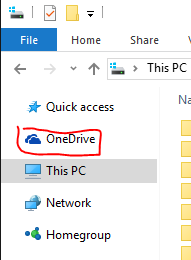
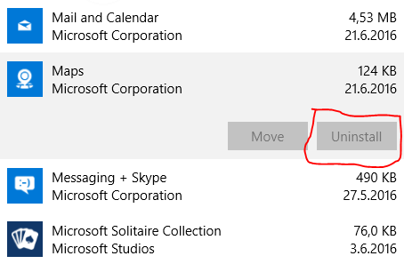
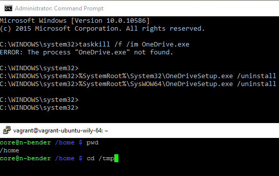
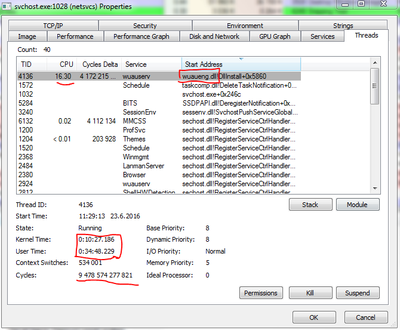
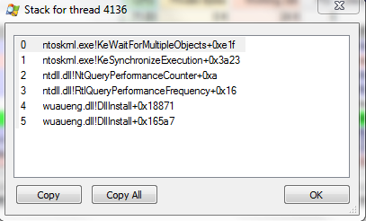
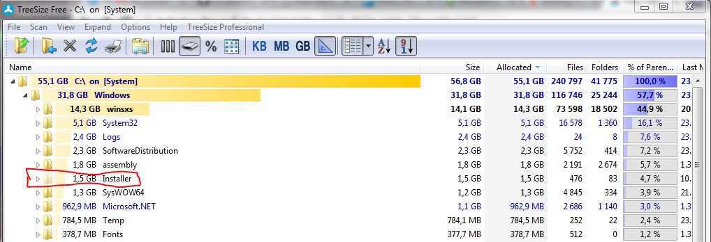

Microsoft, you make miserable software
There are so many reasons that I cannot just let this go anymore, and instead I’ll spend my precious time to write this blog post that gives me absolutely nothing in return, except the fact that writing this feels therapeutic.
Windows 10 bloatware, forced apps
When I got my laptop with ~120 GB SSD, these weigh in:
C:\Windows17.4 GBC:\Program files+C:\Program files (x86)~ 0.8 GB
(this is after I removed all the unnecessary preinstalled crap)
I’ve already lost ~ 20 % of my precious SSD capacity, without having anything special installed.
Also, I don’t need or want to use OneDrive, that’s in-your-face-visible all the time:

But Microsoft has chosen not to let me uninstall it. It is not found from Add or remove programs.
There’s an unofficial magic command for
getting rid of OneDrive,
but it did not work for me.
“Fun” sidenote: there are some Microsoft-forced apps in Add or remove programs, but Microsoft just won’t let you remove them:

All of this Microsoft’s attitude makes me uncomfortable in the future of Windows 10 (“the last version of Windows”). I don’t trust them one bit not to make things even worse.
Windows 10 spyware
Did you know that by default Microsoft steals your Wifi passwords and sends them to Microsoft?
This is done for a friendly-sounding reason:
To let your Facebook/Outlook/Skype friends log in to your Wifi without them having to ask for your password.
You have to specifically know to disable that feature for Windows not to do that. And as seen many times before, Microsoft doesn’t seem to care for the choices you make, and will “accidentally” revert your settings along Windows updates to their privacy-disrespecting defaults.
And even if you disable this feature, all it takes is one friend logging in to your Wifi with that feature left on (laptop or phone), and you have lost your password to Microsoft, and quite probably, the NSA (since Microsoft gladly co-operates).
This is just the tip of the iceberg regarding privacy issues with Windows 10, I’m pretty sure. I haven’t bothered to research more.
Linux’s Bash vs. Windows’ cmd & Powershell
For a long time I took “Linux nerds”’ foam-coming-out-of-mouth super-provocative opinions as stupid self-worth-promoting propaganda, but I’ve got to say that I’m becoming one of them. The more I learn about Microsoft, the more I start despising it.
In recent years I have learned to use Bash more efficiently, and I now realize that it is superior in every sense to cmd.
You can actually run your software’s build scripts with Bash, whereas in Windows with cmd it varies from unmanageable to very painful.
Even the “no visual space after the current directory” in cmd vs bash (has that space) bugs the hell out of me:

And when Microsoft finally realized that they should’ve improved cmd a long time ago, they came up with.. Powershell!
Or “powers hell”? I’m pretty sure only the Satan himself enjoys using Powershell.
As a software engineer who writes code in ~20 different programming languages, I can’t understand Powershell’s syntax.
Office 365
In my previous job we used Office 365, and logging in to the “Office web access” (or OWA, as everything apparently needs a three-letter acronym, or TLA for you guys..) caused a redirect loop, so I was not able to log in without clearing the cookies.
Apparently using your product succesfully requires deep understanding of web-based software mechanics.
Also, with Office 365 we had more downtime than the previous system that used on-premise installation of Lotus Notes (from IBM), go figure..
And yes, my previous employer had questionable judgement for migrating to a Microsoft product, when Google Apps would have been available as well.. The “it’s a US-based company” is not valid argument here, since both Microsoft and Google are US-based, and arguably Google even tries to put up a fight against US-government-spying, while Microsoft seems to do whatever the government wants. NSA even directly taps to Skype.
Lync (now called Skype for business)
What could be so hard about making a chat program? You’ve had a decade to improve Lync, probably a lot more since I think the foundations came from MSN Messenger, i.e. 16+ years of development, but it was not enough for you to fix these catastrophic issues:
- Simple copy-paste (that contained rich formatting) didn’t work - the text just didn’t appear. I had to cycle rich-formatted stuff via Notepad to lose the formatting and copy-paste it from there to Lync.
- Sometimes Lync didn’t just work on delivering the messages (Internet worked fine), so it was faster to walk to my coworker’s cubicle than to send an “instant message”, which kinda defeats the purpose of an IM program.
- Sending (even small) attachments failed too often, and the transfer speeds were slow as hell.
- You could not attach something directly copied from Snipping tool (Windows’ screen capture tool), but you had to artificially save it as a temporary file, and drag that to Lync.
- Sometimes when I managed to paste rich-formatted text, it would mess up the font settings (color or size, I don’t remember) and the net result is that all the following messages after that were not readable, and I could not set the font settings back without closing the conversation.
- If I sent a message to a coworker who was offline, Lync does not deliver that message when he/she ultimately comes back online (FFS, this was a feature even in the old MSN Messenger). Nor did Lync even clearly state whether the message was lost or will be delivered - all the error message told was that the other party is offline. It was left to a mystery. But the message was in fact lost, and I had to manually send an email when this happened.
Let me tell you, when a critical mass of our employees demanded switching to Slack, the sun started shining every day compared to the misery that was Lync. Suddenly we had no issues in pasting text, pasting pictures directly from Snipping tool and getting messages delivered to people when they come back online.
p.s. Lync was a stupid-ass name. “Skype.. FOR BUSINESS!!!” - not much better.
Skype
Issues:
- Sub-standard sustained video quality. Both me and my discussion partner have a decent connection (I can watch 4k content on Youtube). Sometimes the quality was fine, but too many times it seemed to downgrade for no reason. Here’s a screenshot of the video quality, that unfortunately was far too common:
- If Skype (for Android) loses focus (intentionally, or someone regular-calls me), I cannot get back to the video call I had in progress. I have to exit Skype and call again.
- The audio would just get lost from time to time.
- I learned that the “my video” thumbnail in video calls is not representative of what the other party sees. The outgoing video was cropped in a way that my own perspective showed a wider picture, but the receiving party saw let’s say a 75 % of the surface area. Super confusing to look at my own video to think it looks sensible but to hear that my whole face is not actually visible.
- NSA has a direct tap to Skype. So much for the encryption Skype advertises. Did Microsoft intentionally strip away end-to-end encryption or was it intentionally left out of the design?
Forced Windows 10 update
Apparently you think it’s ok to force a major OS upgrade on your customers without asking first.
I have some clients who had headache from this and me being their sysadmin, it ultimately was my job to spend time dealing with your bad decisions and research a fucking third-party software (thanks Steve from grc.com!) to disable this “we do whatever we want” -policy, because apparently there’s no UI for doing it, because you people are so arrogant.
Applying major updates without warning
On my new Windows 10 laptop, when I wanted to do some work in the morning, I opened up the laptop just to find out that without asking it started to apply some major upgrade, that lasted for more than 30 minutes. On my brand-new SSD-boasting laptop with 8 gigs of RAM. 30 minutes!
Later I found out there’s a C:\windows.old directory which has me thinking Windows did some kind of a system restore,
but I was not informed about it. And system restore does not make much sense in a just-bought laptop, since to my knowledge when
I last shut down my computer it was in a normal state.
Apparently you think it’s ok to out-of-the-blue decide that I’m not needing my computer for 30 minutes. Do you even realize that sometimes it could be a life-or-death situation, needing some information from a computer or from Internet, and just not letting the user access his/her computer for 30 minutes could cause some serious harm to someone? How can you think this is acceptable?
Sidetracking a bit here:
Some of you might ask, why am I still working on Windows? Good question! I have given Linux on a desktop a chance every two years or so, and every time it disappoints me. Brand new Linux distribution version’s kernel simply didn’t support my touchpad, and upon learning that a bleeding-edge kernel supports my touchpad, I upgraded my kernel just to find out that video drivers and even a USB mouse stopped working. How’s that possible, since I don’t even remember the years when a generic HID-compliant USB keyboard/mouse was not supported out-of-the-box.
Linux is awesome as a server, but as a desktop it is not there. And Microsoft seems to know that we don’t have a fucking choice - how else would they dare to treat their users this way? If users would have a sensible option, everyone would switch away from Microsoft’s crap.
In my eyes the only meaningful advantage Microsoft has is critical mass in desktop operating system users. If Microsoft would lose it, or a sizable portion would switch to Linux, the manufacturers would have to start supplying device drivers for the Linux kernel, eliminating the biggest barrier to entry to Linux as a viable desktop operating system.
Default update policy allows even Windows server editions to shut down at random times
I cannot stress this enough: a server operating system spontaneously shutting down is unforgiveable. Un-forgiveable.
Still, you guys at Microsoft think it’s acceptable to configure Windows servers by default this way. And apparently it’s left to every fucking sysadmin in the world to learn this themselves in order not to suck at their job and get fired because a critical server shut itself down in the middle of something important. Isn’t infotech already hard enough not to impose yet another case of “you just have to learn this the hard way”?
Another story outside of the server context: my laptop shut itself down to apply updates, and that caused me to lose unsaved work. I had to work for more than 30 minutes to re-do the work that I had not saved, just because you guys are so arrogant as not to ask for a permission. Who do I send the bill for having to do extra work?
Do you seriously think that every software can automatically save the work, in an unattended way, when the OS is telling the software that I am killing your process in a few seconds? Some software can automatically save work in an unattended way (e.g. the awesome Sublime Text), but until that capability comes mainstream, stop being complete assholes by causing people to lose important work.
Windows “just breaks” from time to time
What could be more embarassing for your reputation than the universally accepted fact that you just have to reinstall Windows every now and then, because it keeps breaking down the longer it is from a fresh install? This is only accepted because people don’t know better, and don’t realize that this should not be the norm.
Just recently, svchost.exe started taking 100 % of a single core and it’s heating my system so bad the CPU fan
is going mental. That instance of svchost hosts Windows Update. How can I pinpoint the blame to Windows Update,
since so many services run under svchost.exe - a general-purpose host for services?
I’m glad you asked! I had to check that with a third-party tool, Process Explorer, because your own tools are so miserable. In Task Manager, when clicking on the offending process and selecting “Go to service(s)” shows around 20 services. Thanks for nothing..
Moving on, this is what Process Explorer tells me:

I’m pretty sure it’s not normal for a single Windows Update thread to eat 45 minutes of CPU time, when the process had been started 45 minutes ago..
I have to suspend that process from time to time (EDIT: I just remembered that I can suspend that thread without affecting system stability), but unfortunately it makes the system unstable and most times after suspending that process, I am unable to start any new processes (or even power-off the computer). This makes my system currently unusable without reinstalling. The computer is in my living room, and I can’t bear the sound of the fan + running 100 % even on a single core will rack up the electricity bill I suppose. Are you going to pay for the extra electricity caused by your buggy software?
My Windows installation is so broken, it cannot even download new updates (most probably due to the infinite loop in wuaueng.dll).
Here’s the stack:

Windows Update just hangs on “downloading” without ever giving an error message. Have you guys ever learned about handling errors and/or implementing timeouts?
What makes this more embarassing is that when discussing about this with my friend, who is also an IT professional, he said he’d noticed the same problem in their company’s servers: Windows Update using 100 % CPU. I’m glad my production stuff runs on Linux, and that WILL NOT change.
Btw, for anybody interested, I found a fix by Googling (not Binging :D) for “windows update svchost kewaitformultipleobjects”: http://superuser.com/a/997067.
How’s a regular person able to investigate for the solution as far as I did?
p.s. Windows breaking down could be almost surely fixed with a sandbox-based approach (more on this later in this post). That stops the host system from being affected by installation of new software. It can be done for GUI-based software, just look at Jessie Frazelle’s awesome proof-of-concept work.
Windows Installer subsystem
Apparently you thought that it’s a good idea to make the .msi file format some sort of
proprietary relational database.
You know, not everything needs to be an SQL-database? How does Docker succesfully manage to distribute applications with just simple .tar semantics?
And somehow you decided it’s a good idea to treat the installer’s file name in a semantic way. Renaming the original .msi file after software installation will make Windows Installer think that this is a different installer.
I’d like to see the memo from the meeting where you decided it’s acceptable that downloading the same setup package again with a browser yielding “setup (2).msi” (or equivalent) will make for unexpected surprising behaviour.
Windows Installer concepts are so hard, it’s no wonder there’s a job title “Installation engineer” in the world. I totally now believe that in some companies there might be a dedicated person for building the setup packages, because you just make it so overly hard and complex.
I get that installing Office or Visual Studio and its million optional inter-connected dependencies is complex, but why do you impose the complexities of installing worst-case-scenario-complexity software on all other projects that are almost all guaranteed to be less complex than what .msi was designed for?
I speak from first-hand experience because unfortunately I had a customer that wanted to have my software installed via Windows Installer, instead of open source NSIS installer framework I first used. Their only argument was that all their other software is installed via Windows Installer as well. Everything that was super simple to do with NSIS, was more complex with Windows Installer. Windows Installer is one of the most miserable things I have had to use in my professional career.
Also, related to the complaint about Windows taking up too much disk space: Windows Installer contributes to the problem with the design decision that the original installation package has to be stored for the purpose of uninstalling the software.
Just look at C:\Windows\Installer, Windows keeps all original installation packages there (thanks awesome
TreeSize program):

As you can see, Installer directory is somewhat of a offender in hogging disk space, arguably for not a good reason.
On the other hand I understand it might have been easier to architect the installer that way. But sometimes the easy solution (programmer-wise) is not the right thing to do. Comparing with the excellent NSIS, it writes a special uninstaller executable, which contains only the details needed in uninstalling that software, so you don’t need to keep the original installer hogging your precious disk space.
You know, .msi is so full of shit that it deserves its own blog post. Stay tuned.
Is it any wonder that “enterprise-grade” software is almost always miserable, if even the most fundamental thing us developers have to deal with (= shipping our software to the customer: the installation package) is made overly complex and hard?
Missing the train on implementing containers
Containers in Linux went mainstream a few years ago. Apple has also shipped sandboxing.
Currently you do realize the benefits of running sandboxed software and you are developing that same namespace support for the Windows kernel, but how could you not see that coming?
How did your competitors ship something so important while your users are still waiting?
Especially you guys should have realized that, because so many instances of Windows software try to do so much stupid stuff (think 300 MB printer “drivers”), it’d be much better to give all software by default less privileges to mess up the system (read my previous point on Windows breaking from time to time).
p.s.
docker images
REPOSITORY TAG IMAGE ID CREATED SIZE
microsoft/iis windowsservercore c26f4ceb81db 2 weeks ago 9.48 GB
9.48 GB :D :D :D
Check out this advanced level shit on Linux:
$ docker images debian
REPOSITORY TAG IMAGE ID CREATED VIRTUAL SIZE
debian latest f854eed3f31f 13 days ago 125.1 MB
125 MB. Can’t see myself ever pushing a ~10 GB Windows-based application image to Docker Hub (since the push has to include the base image as well)…
Nokia fiasco
In September 2013 Microsoft bought Nokia (a Finnish phone manufacturer you might have heard of, ten years ago when it still was relevant and not dying out of its own arrogance), in hopes of gaining any relevance (who really wants to use a Windows phone?) with fierce competition from both the Android ecosystem and Apple’s, promising:
- Not to lay off Finnish employess.
- To invest at least 250 million USD in building a datacenter in Finland.
The deal was a total fiasco. Here’s Microsoft delivering on the promises:
- 10 months in, in 2014 they laid off 1 100 Finnish employees (12 500 in total).
- In May 2016 they laid off another 1 350 Finnish employees (1 850 in total).
- The datacenter didn’t get built, or a really small one got rented and they are dodging when being queried about it.

Thanks for reading! 😍
If you like my writing, consider following me on Twitter.
Stay updated on my blog posts & projects - sign up for
my newsletter. 🚀
No spam, unsubscribe any time.
RSS also available.